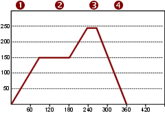
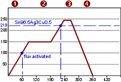
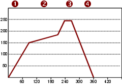

Reflow Profiles
The temperature-over-time curve that makes or breaks every SMD joint. Understanding the four zones is the difference between good boards and scrap.
The Four Zones
Every reflow profile has the same structure. The numbers change per alloy, but the zones don't.
| Zone | What Happens | Temp (SAC305) | Duration | Ramp |
|---|---|---|---|---|
| 1. Preheat | Board heats from room temp. Solvents in paste begin to evaporate. | 25 → 150-180°C | 60-90s | 1.5-3°C/s (max 3) |
| 2. Soak | Temperature equalizes across the board. Flux activates, cleans oxide. All pads reach roughly the same temp. | 150-200°C | 60-120s | Hold or slow ramp |
| 3. Reflow | Solder melts (crosses liquidus). IMC forms at solder-pad interface. Components self-align via surface tension. | Peak 235-255°C | TAL: 30-60s | ~2°C/s up |
| 4. Cooling | Solder solidifies. Controlled cooling prevents thermal shock and produces good grain structure. | Peak → ambient | — | 3-6°C/s (4 rec.) |
Figure: Standard reflow soldering profile

Figure: Decision points in a reflow profile

Zone 1: Preheat — Driving Off Moisture
The board and components have absorbed moisture from the air. Water boils at 100°C. If you ramp straight to reflow (>217°C), that trapped moisture expands explosively:
- Solder spattering — steam escaping through molten paste throws solder balls across the board
- Popcorning — moisture inside plastic IC packages vaporizes, cracking the package from the inside (delamination). This is what MSL (Moisture Sensitivity Level) ratings are about.
- Voiding — steam trapped under components creates voids in the solder joint
The preheat zone (25°C → 150-180°C at 1.5-3°C/s) gives moisture time to escape before the solder melts. This is why the ramp rate has a maximum — too fast and the water can't escape gently.
IPC/JEDEC J-STD-020 rates components MSL 1 through 6, with floor life ranging from unlimited (MSL 1) to mandatory bake before every reflow (MSL 6). Components that have exceeded their floor life must be baked at 125°C for 24-48 hours before reflow. For the full MSL table and bake requirements, see Cleanliness — Moisture Sensitivity.
For hobby work: if your ICs came in a sealed bag with a desiccant, and you opened it recently, you're fine. If the parts have been sitting in open air for months — preheat slowly and consider a bake.
Zone 2: Soak — Flux Activation and Equalization
The soak zone (150-200°C, 60-120 seconds) has two critical jobs:
Job 1: Flux Activation
Flux activators become chemically active in this temperature range. They dissolve metal oxides on the pads and component terminations, exposing clean metal for the solder to bond to.
- Rosin flux fully melts at 172-175°C — right in the soak zone
- The flux has a working window of roughly 3 minutes from activation to burnout
- If the soak is too long or too hot, flux exhausts before reaching reflow — joints won't wet
- If the soak is too short, flux hasn't had time to clean all surfaces — uneven wetting
Job 2: Temperature Equalization
Different parts of the board have different thermal masses:
- A 0402 resistor on a thin trace reaches soak temperature almost instantly
- A QFN on a ground plane might lag by 20-30°C
- A BGA with hundreds of solder balls is a massive thermal reservoir
- A board edge heats faster than the center (more exposure to oven air)
The soak holds everything at 150-200°C long enough for the lagging parts to catch up. When you exit the soak into the reflow ramp, the entire board should be within 10°C of the same temperature. This is what prevents tombstoning — both pads on a passive reflow at the same time instead of one before the other.
A common mistake: extending the soak to "be safe." Over 120 seconds in the soak zone causes:
- Flux exhaustion — activators consumed before reflow
- Tin oxidation — exposed tin on component terminations re-oxidizes
- Reduced process window — less flux activity remaining means you need a more precise peak
Zone 3: Reflow — What Happens at Peak
The First 5 Seconds Above Liquidus
As the solder crosses its melting point (217°C for SAC305), several things happen simultaneously:
- Solder coalesces — the paste powder particles merge into a continuous liquid pool
- Wetting begins — molten solder contacts the clean pad surface (thanks to flux) and starts forming intermetallic compounds
- Self-alignment — surface tension of the molten solder pulls components toward the center of their pads. This corrects minor placement errors (up to ~50% misalignment on passives).
- Outgassing completes — any remaining volatiles escape through the molten solder
Peak Temperature vs Time
The peak temperature and time at peak interact:
| Peak Temp | Time at Peak | Result |
|---|---|---|
| Too low (<235°C for SAC305) | Any | Incomplete wetting. Cold joints on components with higher thermal mass. |
| Optimal (240-250°C) | 10-15s | Full wetting. Thin, uniform IMC layer. Strong joints. |
| High (250-255°C) | 10-15s | Acceptable. IMC grows faster but still within spec if TAL is short. |
| Too high (>255°C) | >15s | Excessive IMC growth. Component damage risk. Pad dissolution accelerates. |
The relationship is inverse: if you must go hotter (to reflow a difficult joint), keep the time shorter. If you keep the peak modest, you have more time budget.
Pad Dissolution
Molten solder dissolves copper. At reflow temperatures, the dissolution rate is:
- ~0.05 μm/s at 240°C for SAC305
- ~0.08 μm/s at 260°C
- Standard copper plating is 25-35 μm thick (1 oz copper)
At 240°C with a 60-second TAL, you dissolve about 3 μm — under 10% of the copper thickness. Safe. But with multiple rework cycles, each dissolving another 3 μm, you can thin the pad dangerously. This is why there's a practical limit of 3 rework cycles.
Zone 4: Cooling — Not Just "Turning Off the Heat"
Why Cooling Rate Matters
The grain structure of solidified solder depends on cooling rate:
| Cooling Rate | Grain Structure | Result |
|---|---|---|
| 3-6°C/s (controlled) | Fine-grained | Strong, ductile joints. Good fatigue resistance. |
| 1-2°C/s (slow) | Large-grained | Joints look duller/rougher. Slightly weaker. More susceptible to fatigue. |
| <1°C/s (very slow) | Coarse, columnar grains | Weak joints. Visible grain boundaries. Poor reliability. |
| >8°C/s (too fast) | Fine but stressed | Thermal shock risk. PCB warping. Component cracking. |
Practical Cooling
- Reflow oven: built-in cooling zone with fans. Set to 4°C/s.
- Hot air rework: remove heat source, let cool naturally. A gentle fan at a distance is fine.
- Hot plate: slide the board off the hot surface onto a room-temperature surface.
Don't blow compressed air onto a hot board. Don't drop it onto a cold metal plate. The thermal shock can crack ceramic capacitors, delaminate BGAs, and warp the PCB. Controlled cooling means predictable, gradual — not fast.
PCB Heat Distribution
Not all parts of the board heat at the same rate. Understanding why is the key to avoiding profile-related defects.
Component Thermal Mass
| Component | Thermal Mass | Behavior in Profile |
|---|---|---|
| 0402 resistor | Tiny | Follows the oven air temperature almost exactly. First to reflow. |
| 0805/1206 passives | Small | Slight lag behind air temp. Reflows within seconds of smaller parts. |
| QFP-48 IC | Medium | Body acts as heat reservoir. Legs reflow first, then center catches up. |
| QFN with thermal pad | Medium-high | Ground pad is a heat sink connected to copper pour. Lags significantly. |
| BGA-256 | High | Hundreds of solder balls + package body. Slowest to reach reflow. |
| Aluminum electrolytic cap | High | Large thermal mass, plus heat-sensitive. Often hand-soldered after reflow. |
| Metal shield/can | Very high | Massive heat sink. May need extended soak or localized preheat. |
Board Geometry Effects
- Board edges heat faster — more exposed surface area to oven airflow. Center of the board lags.
- Ground planes absorb heat — internal copper layers act as heat spreaders. Areas over ground planes lag behind areas over signal-only layers.
- Thick boards lag — 2.4mm boards take significantly longer to equalize than 1.6mm boards.
- Panelized boards — boards in the center of a panel heat slower than boards at the edge.
The Delta-T Problem
The temperature difference between the hottest point and coldest point on the board at the moment you enter reflow. This number determines whether all joints reflow properly.
| Delta-T at Reflow | Result |
|---|---|
| <10°C | All joints reflow within seconds of each other. Minimal tombstoning risk. |
| 10-20°C | Some lag. Larger components may have cold joints while small ones are fine. |
| >20°C | Problem. The coldest joints may not reflow at all, or you must push peak so high that the hottest parts overheat. |
Reducing delta-T: longer soak, slower ramp, bottom-side preheat, better oven airflow calibration.
The Flux Timeline
Flux has a finite working life once activated. Here's what happens through the profile:
| Time / Temp | Flux State | What's Happening |
|---|---|---|
| Room temp | Inert | Flux is dissolved in solvent. No chemical activity. |
| 60-70°C | Softening | Rosin begins to soften. Solvents start evaporating. |
| 100-140°C | Activating | Solvents mostly gone. Activators begin reacting with metal oxides. |
| 150-200°C (soak) | Peak activity | Oxide removal in full swing. Clean metal surfaces exposed. Protective blanket forming. |
| 200-217°C (ramp) | Working hard | Activators being consumed. Clock is ticking. |
| >217°C (reflow) | Depleting | Remaining activators consumed rapidly. Solder wets the now-clean surfaces. |
| >250°C | Charring | Flux residue begins to polymerize/char. If flux was exhausted before reflow, you get dry joints. |
| >300°C | Destroyed | Flux is completely carbonized. Black residue. No more chemical activity. |
From flux activation (~100°C) to the end of reflow, you have roughly 3 minutes of useful flux life. If your preheat + soak + ramp takes longer than that, the flux will be exhausted before the solder melts. This is the primary constraint on total profile time.
Peak Temperature
Peak = melting point + 20-40°C. Enough to ensure full reflow, not so much that you damage components.
| Alloy | Melting Point | Peak Range | Absolute Max |
|---|---|---|---|
| SAC305 | 217°C | 237-257°C | 260°C (component limit) |
| SAC387 | 217°C | 237-257°C | 260°C |
| SN100C | 227°C | 247-260°C | 260°C component limit per J-STD-020 |
| Sn42/Bi58 | 138°C | 158-178°C | Much lower — check component compatibility |
Time Above Liquidus (TAL)
The total time the solder is molten. This is the most critical parameter after peak temperature.
| TAL | Result |
|---|---|
| 30-60 seconds | Optimal. Good IMC formation, complete wetting, no damage. |
| 60-90 seconds | Acceptable but pushing it. IMC layer grows thicker. |
| >90 seconds | Excessive IMC growth → brittle joints. Pad dissolution risk. Component damage risk. |
| <20 seconds | Insufficient wetting. Cold joints. Solder may not fully coalesce. |
When solder is molten on a copper pad, tin atoms diffuse into the copper and form intermetallic compounds (Cu₆Sn₅ and Cu₃Sn). A thin, uniform IMC layer (1-3 μm) is good — it's the metallurgical bond. A thick, uneven IMC layer (>5 μm) is brittle and will crack under thermal cycling. The IMC grows with time and temperature — this is why TAL and peak temp have upper limits.
Profile Shapes
Soaking / Trapezoidal
Gradual preheat → flat soak → ramp to peak → cool. The soak zone is 60-120 seconds at 150-200°C.
- Best for: complex boards with BGAs and mixed component sizes
- Why: the soak equalizes the entire board so all joints reflow within seconds of each other
- Drawback: longer cycle time, more flux consumed during soak
Tent / Triangular
Steady ramp from room temp to peak, then cool. No flat soak zone.
- Best for: simple boards without large thermal-mass components
- Why: faster cycle, less flux degradation
- Drawback: components with different thermal masses hit reflow at different times → tombstoning risk
Figure: Profile with slanted soak phase

What Goes Wrong
| Problem | Likely Profile Issue | Fix |
|---|---|---|
| Cold joints on large components (BGAs, shields) | Not enough soak — big parts lag behind | Extend soak to 90-120s. Increase preheat. |
| Tombstoning on small passives | Uneven reflow — one pad melts before the other | Longer soak to equalize. Or switch to trapezoidal profile. |
| Solder balls / spattering | Solvents in paste didn't fully evaporate during preheat | Slower preheat ramp. Extend soak time. |
| Dull, grainy joints (not the normal lead-free look) | Cooling too slow → large grain structure | Increase cooling rate to 4-6°C/s. Add cooling fans. |
| Brittle joints that crack in thermal cycling | Excessive TAL or peak temp → thick IMC | Reduce peak by 5-10°C. Shorten TAL to 30-45s. |
| Voiding under QFN/BGA thermal pads | Profile issue + paste issue combined | Extend soak to let volatiles escape. Optimize paste — see Solder Paste. |
| Components shifted/rotated | Too much vibration during cooling, or uneven paste | Ensure oven belt is smooth. Check paste deposit consistency. |
For BGA-specific hot air rework profiles and starting parameters, see Hot Air Rework — Starting Profiles.
Profiling in Practice
Measuring Your Profile
- Attach K-type thermocouple to a representative pad (tape or high-temp solder)
- Place multiple TCs if possible — one on the smallest component, one on the largest, one near board center, one near edge
- Run the oven and log temperature vs time
- The delta between your hottest and coldest TC at reflow should be <10°C. If larger, extend soak.
- Peak should be 20-40°C above liquidus at the coldest point
Your process window is the range of peak temps and TAL values that produce acceptable joints. A wide window (e.g., 237-257°C peak, 30-60s TAL) means the process is robust. A narrow window means any variation causes defects. If you're borderline, tweak the profile to center yourself in the window — don't ride the edge.